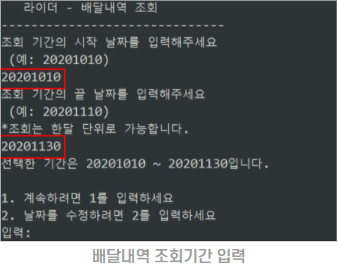
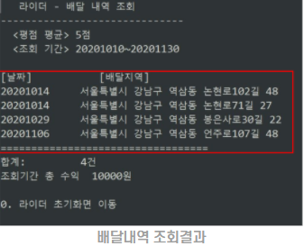
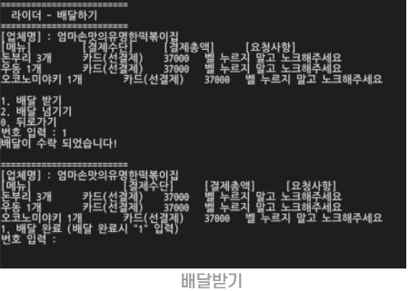
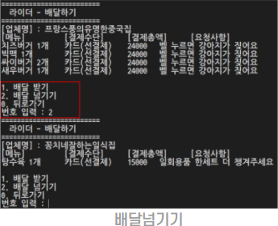
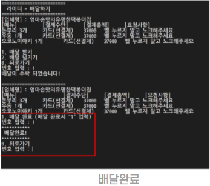
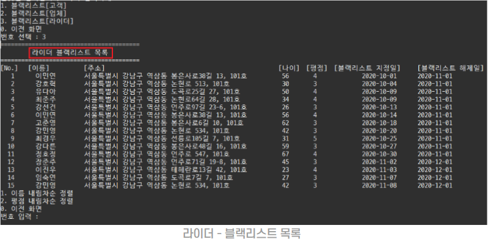

DDDelivery (배달의민족 벤치마킹)
 https://github.com/hyunwooDEV/DDDelievry
https://github.com/hyunwooDEV/DDDelievry
2020.11.03 ~ 2020.11.22
#Java
팀 프로젝트 목표
국내 배달앱 서비스에서 60% 시장점유율로 1위를 차지하고 있는 배달의민족을 클론 작업을 진행하고
서비스 분석을 통하여, 추가 기능 구현을 목표로 했습니다.
담당파트
-
라이더 - 내역조회
- 배달내역조회 - 입력한 기간의 배달 완료 내역을 조회 할 수 있다. # 텍스트파일의 데이터를 split (","); 형태로 나누고 객체에 정보를 입력 하는 형태로 구현했습니다.


-
라이더 - 배달하기
- 배달받기 - 주문 상세 내역을 보고 콜을 받을 수 있다.
- 배달넘기기 - 주문 상세 내역을 보고 콜을 넘기고 다른 업체 주문을 받을 수 있다.
- 배달 완료 - 라이더는 배달완료시 배달완료 버튼을 누르고 해당 건을 종료 할 수 있다. # if문을 활용하여 배달대기, 배달중 상태별로 읽어오는 data값을 달리 적용하는 형태로 구현했습니다.



-
라이더 - 블랙리스트 관리
- 블랙리스트 조회 - 블랙리스트로 등록되어있는 라이더를 서비스평점, 이름순으로 정렬하여 조회 할 수 있다. #텍스트파일의 데이터를 split (","); 형태로 나누고 객체에 정보를 입력하는 형태로 구현했습니다.

프로젝트를 통해 배우고 느낀점
#1.
개발 프로젝트의 전반적인 프로세스를 경험해 볼 수 있었던 시간이였고
주제, 순서도, 기능구현, 데이터선정 등을 위해 했던 많은 회의들은
개발자라는 포지션을 조금이나마 이해하게 해주었습니다.
#2.
객체 네이밍의 중요성을 체감했습니다.
동료들과 협업하고, 파일을 합치는 과정에서 클래스, 메서드, 변수의 이름을
본질적으로 정확한 기능을 내포하고 이해가 쉽게 생성했을때 작업속도가 빠르고 오류가 적어진다는걸 알게 되었습니다.
#3.
학습 4주차 첫 번째 프로젝트 때, 당당하게 구현해보겠다! 라고 어필한 제 분량의 코드를 기한 내 소화하지 못하고
전공자 조원 분께서 도와주셨을 때, 죄송함과 민망함은 이루 말할 수 없었습니다.
이와 같은 상황을 반복하지않고 반등 기점으로 바꾸기 위해 부족한 부분을 점검하고 공부량을 더 늘렸습니다.
#4.
데이터 구성범위를 정하는데 있어서, 욕심이 앞서 불필요한 데이터를 나열한 부분입니다.
구현에 필요한 데이터만 우선적으로 선별했다면 불필요한 작업이 많이 줄었을 것 같습니다.
#5.
프로젝트를 진행하면서 타임라인이 촉박하여 기능구현을 최우선 목표로 삼아
프로그램의 개선 방안에 대해서는 신경쓰지 못했다는점이 아쉽습니다.